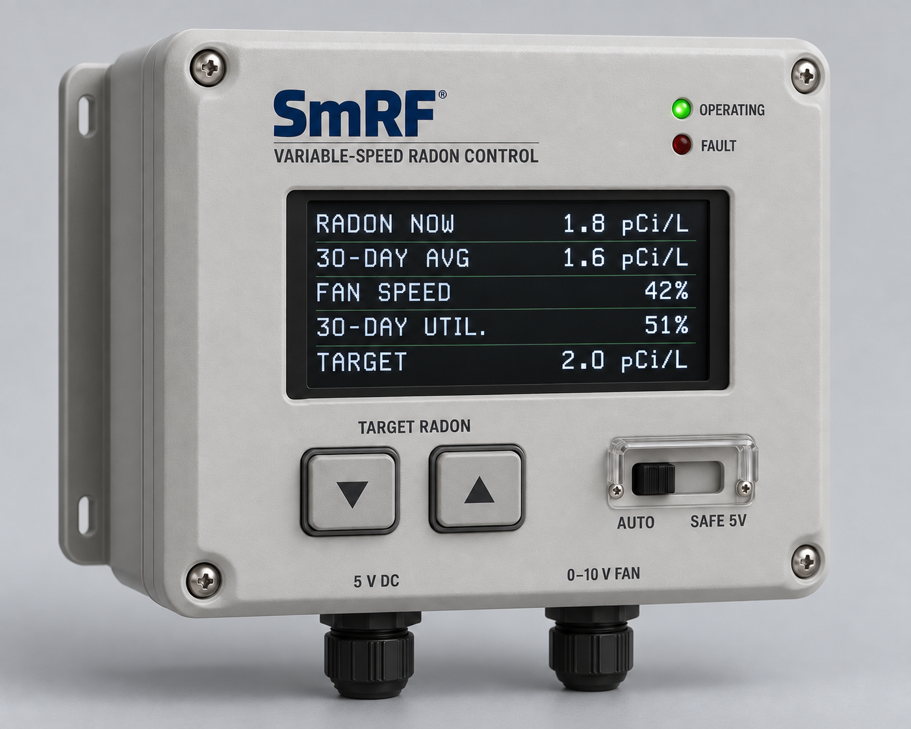
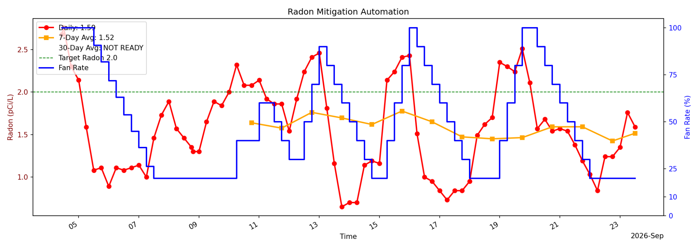
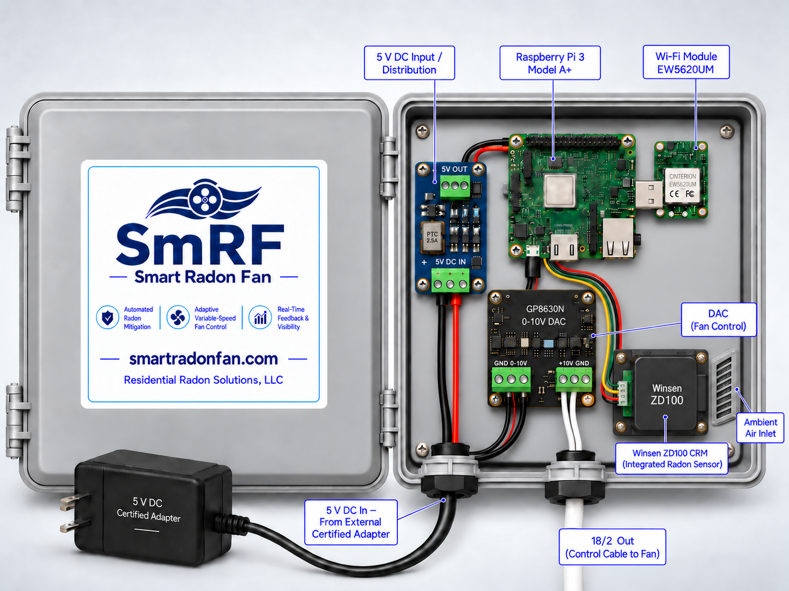
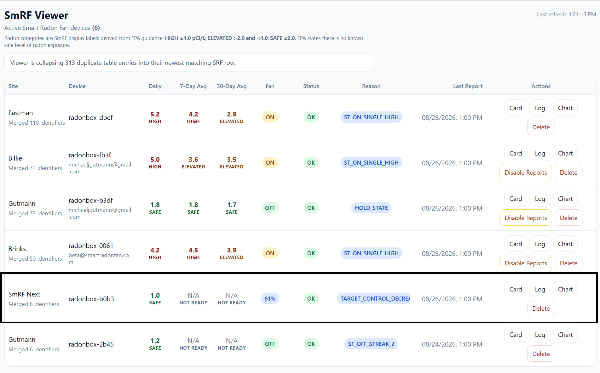

⌁
Independent CRM
Radon readings come from a separate compatible monitor, allowing SmRF to focus on turning measurement data into fan-control decisions.
Using readings from a separate compatible continuous radon monitor, SmRF Mini automatically adjusts a Fantech EC variable-speed fan toward a selected radon target.

A complete local control loop—not merely an always-on fan.
A separate compatible CRM measures indoor radon and provides the feedback used by SmRF.
The local controller compares the latest measurement with the selected target.
A hardwired 0–10 V signal commands the compatible Fantech EC fan.
New readings show the response, and the control cycle continues.
SmRF is designed to work with an established, compatible continuous radon monitor rather than incorporate a new radon sensor. That lets us focus development on dependable control, EC fan integration, and a practical path to market.
Radon readings come from a separate compatible monitor, allowing SmRF to focus on turning measurement data into fan-control decisions.
SmRF Mini regulates fan output instead of leaving the fan at one fixed operating point.
See current radon, 30-day average, fan speed, fan utilization, target, and operating status.
The entire measurement and control process operates inside the home without internet service.
Existing SmRF prototypes have generated the operating data needed to develop and validate the variable-speed control algorithms that SmRF Mini will use.

SmRF Mini focuses on local variable-speed fan control using an independent CRM. SmRF WiFi adds connected reporting and diagnostics while keeping fan control local. SmRF Viewer provides the optional remote monitoring layer. Neither controller incorporates its own radon sensor.
An autonomous local fan controller designed to use readings from a separate compatible CRM, with target selection, automatic 0–10 V fan control, and local operating status.

The connected SmRF platform uses a separate compatible CRM for radon feedback and combines local variable-speed fan control with WiFi reporting, remote diagnostics, software support, and installation visibility.

The Viewer turns connected installations into a remotely visible fleet with performance history, operating status, attention rules, reports, and service information.
We welcome conversations with fan manufacturers, radon equipment distributors, mitigation professionals, contract manufacturers, and research organizations.